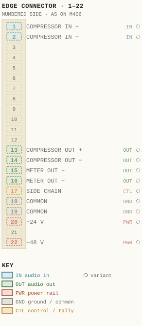
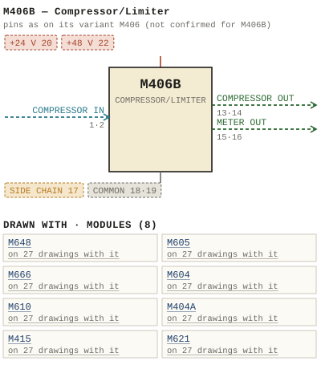

M406B — Compressor/Limiter
| Type | module |
| Category | DYNAMICS |
| Try it | simulator & front panel · download package (zip) |
| Earliest dated evidence | 1969|2 — month & year |
| Evidence | "DEC 69" in PUBLIC/Manuals + tech DOCUMENTS/Modules/M406B/M406B - Compressors Schematic 406-02-013 - DEC 1969/Raw scan - /WBSps.ca - M406B - Part 4.png |
| Confidence | medium |
| All years found | 1969|2 |
| Variants | M406, M406A, M406C, M406M |
| Folder | DOCUMENTS/wbsPS-NOT UPLOADED |
| Folder | Modules/AMPLIFIERS/M600 |
| Folder | Modules/AMPLIFIERS/M604 |
Connections
What it is made of and what it is part of.
Pictures
 1975 - M406B - PRICE LIST - PRICE LIST.jpg
1975 - M406B - PRICE LIST - PRICE LIST.jpg

M406B.pinout.svg

M406B.connections.svg 1968 - B 406-02--13 - COMPRESSOR SCHEMATIC CEILING CONTROL MODIFIED - ISS 2.png
1968 - B 406-02--13 - COMPRESSOR SCHEMATIC CEILING CONTROL MODIFIED - ISS 2.png 1969 - M406B - IGRO RECX SYSIES LTU MTE DEC.png
1969 - M406B - IGRO RECX SYSIES LTU MTE DEC.png 1969 - M406B - SCHEMATIC CEILING CONTROL MODIFIED.png
1969 - M406B - SCHEMATIC CEILING CONTROL MODIFIED.png 1969 - M406B - P1.jpg
1969 - M406B - P1.jpg 1969 - M406B - P10.jpg
1969 - M406B - P10.jpg 1969 - M406B - P11.jpg
1969 - M406B - P11.jpg 1969 - M406B - P12.jpg
1969 - M406B - P12.jpg 1969 - M406B - P13.jpg
1969 - M406B - P13.jpg 1969 - M406B - P14.jpg
1969 - M406B - P14.jpg 1969 - M406B - P15.jpg
1969 - M406B - P15.jpg 1969 - M406B - P16.jpg
1969 - M406B - P16.jpg 1969 - M406B - P17.jpg
1969 - M406B - P17.jpg 1969 - M406B - P18.jpg
1969 - M406B - P18.jpg 1969 - M406B - P2.jpg
1969 - M406B - P2.jpg 1969 - M406B - P3.jpg
1969 - M406B - P3.jpg 1969 - M406B - P4.jpg
1969 - M406B - P4.jpg 1969 - M406B - P5.jpg
1969 - M406B - P5.jpg 1969 - M406B - P6.jpg
1969 - M406B - P6.jpg 1969 - M406B - P7.jpg
1969 - M406B - P7.jpg 1969 - M406B - P8.jpg
1969 - M406B - P8.jpg 1969 - M406B - P9.jpg
1969 - M406B - P9.jpg 1969 - M406B - Schematic and layout.jpg
1969 - M406B - Schematic and layout.jpg 1969 - M406B - WBSps.ca - M406B - Part 1 - Brighter.png
1969 - M406B - WBSps.ca - M406B - Part 1 - Brighter.png 1969 - M406B - WBSps.ca - M406B - Part 1.png
1969 - M406B - WBSps.ca - M406B - Part 1.png 1969 - M406B - WBSps.ca - M406B - Part 2 - Brighter.png
1969 - M406B - WBSps.ca - M406B - Part 2 - Brighter.png 1969 - M406B - WBSps.ca - M406B - Part 2.png
1969 - M406B - WBSps.ca - M406B - Part 2.png 1969 - M406B - WBSps.ca - M406B - Part 3 - Brighter.png
1969 - M406B - WBSps.ca - M406B - Part 3 - Brighter.png 1969 - M406B - WBSps.ca - M406B - Part 3.png
1969 - M406B - WBSps.ca - M406B - Part 3.png 1969 - M406B - WBSps.ca - M406B compressor.jpg
1969 - M406B - WBSps.ca - M406B compressor.jpg 1969 - M406B - Ward Beck Systems M406B 2.jpg
1969 - M406B - Ward Beck Systems M406B 2.jpg 1969 - M406B - Ward Beck Systems M406B.jpg
1969 - M406B - Ward Beck Systems M406B.jpg 1969 - M406B - wbsps - module - m406b comp - back.jpg
1969 - M406B - wbsps - module - m406b comp - back.jpg 1969 - M406B - wbsps - module - m406b comp - front.jpg
1969 - M406B - wbsps - module - m406b comp - front.jpg 1969 - M406B - wbsps - module - m406b compressors.jpg
1969 - M406B - wbsps - module - m406b compressors.jpg 1969 - M406B - wbsps - module - m406b compressors_small.jpg
1969 - M406B - wbsps - module - m406b compressors_small.jpg 1969 - M406B - wbsps - promo - m406b comp - 003.jpg
1969 - M406B - wbsps - promo - m406b comp - 003.jpg 1969 - M406B - wbsps - promo - m406b comp - 004.jpg
1969 - M406B - wbsps - promo - m406b comp - 004.jpg 1969 - M406B - wbsps - promo - m406b comp - back.jpg
1969 - M406B - wbsps - promo - m406b comp - back.jpg 1969 - M406B - wbsps - promo - m406b comp - back_small.jpg
1969 - M406B - wbsps - promo - m406b comp - back_small.jpg 1969 - M406B - wbsps - promo - m406b comp - front.jpg
1969 - M406B - wbsps - promo - m406b comp - front.jpg 1969 - M406B - wbsps - promo - m406b comp - front_small.jpg
1969 - M406B - wbsps - promo - m406b comp - front_small.jpg 19xx - M406B - M 406B Waveforms.jpg
19xx - M406B - M 406B Waveforms.jpg 19xx - M406B - M406B.jpg
19xx - M406B - M406B.jpg 472px-Wbsps_-_module_-_m406b_comp_-_back.jpg
472px-Wbsps_-_module_-_m406b_comp_-_back.jpg Archived - wbsps - promo - m406b comp - 002.jpg
Archived - wbsps - promo - m406b comp - 002.jpg WBS M406b Schematic and layout.jpg
WBS M406b Schematic and layout.jpg Ward Beck Systems M406B 2.jpg
Ward Beck Systems M406B 2.jpg wbsps - module - m406b comp - back(1).jpg
wbsps - module - m406b comp - back(1).jpg wbsps - module - m406b comp - back.jpg
wbsps - module - m406b comp - back.jpg 1968 - M406 - P2.jpg
1968 - M406 - P2.jpg 1969 - M406 - B 147-06-010 - M406B COMRESSOR - M147 COMPONENT LAYOUT.jpg
1969 - M406 - B 147-06-010 - M406B COMRESSOR - M147 COMPONENT LAYOUT.jpg 1970 - M406 - B 406-02-011 - M406B COMPRESSOR - PLUG CONNECTIONS.jpg
1970 - M406 - B 406-02-011 - M406B COMPRESSOR - PLUG CONNECTIONS.jpg 1970 - M406 - B 406-02-012 - M406B COMPRESSOR - SYSTEM WIRING.jpg
1970 - M406 - B 406-02-012 - M406B COMPRESSOR - SYSTEM WIRING.jpg 1972 - M406 - B 406-04-010 - M406B(C) COMPRESSOR - MODULE LAYOUT.jpg
1972 - M406 - B 406-04-010 - M406B(C) COMPRESSOR - MODULE LAYOUT.jpgPrice history
| Year | Kind | Price | Listed as | Effective | Source |
|---|---|---|---|---|---|
| 1975|8 | list price | 435.00 USD | Compressor/Limiter | May 1975 | source |
Pinout & connections
No page of its own numbers M406B's contacts: these are its variant M406's, drawn faded — not confirmed for M406B.
pinout (SVG) · connections (SVG) · pins (JSON)
Pin evidence — 11 contacts
| Pin | Signal | Kind | Confidence | Read from | Source |
|---|---|---|---|---|---|
| 1 | COMPRESSOR IN | audio in | variant | rto-144 | M406.rto144.json, p. 1 |
| 2 | COMPRESSOR IN | audio in | variant | rto-144 | M406.rto144.json, p. 1 |
| 13 | COMPRESSOR OUT | audio out | variant | rto-144 | M406.rto144.json, p. 1 |
| 14 | COMPRESSOR OUT | audio out | variant | rto-144 | M406.rto144.json, p. 1 |
| 15 | METER OUT | audio out | variant | rto-144 | M406.rto144.json, p. 1 |
| 16 | METER OUT | audio out | variant | rto-144 | M406.rto144.json, p. 1 |
| 17 | SIDE CHAIN | control / tally | variant | rto-144 | M406.rto144.json, p. 1 |
| 18 | COMMON | ground / common | variant | rto-144 | M406.rto144.json, p. 1 |
| 19 | COMMON | ground / common | variant | rto-144 | M406.rto144.json, p. 1 |
| 20 | +24 V | power rail | variant | rto-144 | M406.rto144.json, p. 1 |
| 22 | +48 V | power rail | variant | rto-144 | M406.rto144.json, p. 1 |
Dates found in the documents


Physical manual inventory
| Item | Location | Status | Scanned |
|---|---|---|---|
| M406B | Recently scanned and stiched by WB |
Photos & scans (74)


Parts list — board M406B (27 parts)
From 1969 - M406B - P15.jpg, page 1 (scanned); also in timelines/data/bom.csv.
| Ref | Part | Value | Manufacturer | Mfr part no. |
|---|---|---|---|---|
| R66 | Philips All Resistors %w 5% | 220 | ||
| R67 | or Allen unless specified | 220 | ||
| R68 | Bradley otherwise | 220 | ||
| R77 | Sw Dale RSS | 200 | ||
| R78 | 2 Sw Dale RS2B | 2k | ||
| R88 | look | |||
| R92 | Factory Select | |||
| R95 | Factory Select | |||
| R30 | Philips All Resistors Yaw 5% | 15k | ||
| R31 | lok | |||
| R38 | Potentiometer Piher 20P | 20K | ||
| R40 | Factory select | |||
| R44 | lok | |||
| C36 | mfd 35v Kemet | 4 . 7 | T362-B475-035A8 | |
| C37 | mfd 1OOV Philips C344BB / A22K | 022 | ||
| C38 | mfd lOov Philips | 47 | c344CH/A47OK | |
| C39 | mfd 20v Kemet | 47 | T362-C476-020A5 | |
| CR2 | Diode Fairchild FD | 444 | ||
| CR3 | Diode Fairchild FD | 444 | ||
| CR4 | Diode Fairchild FD | 444 | ||
| CR6 | Diode Zener I.R_ IN 754-A | 6 . 8V | ||
| CR7 | Diode Fairchild FD | 444 | ||
| CR8 | Diode Fairchild FD | 444 | ||
| CR9 | Diode Fairchild FD | 444 | ||
| CR1L | Diode Fairchild FD | 444 | ||
| CR13 | Diode Zener I.RS IN 754-A | 6 . 8V | ||
| CR14 | LED Diode H.P | 4440 |
Named in other drawings & documents (5)
From the manuals
Each manual split into its sections. Text that is the same in many Ward-Beck manuals (warranty, address, standard notes) is kept once on the Boilerplate page and linked.
General description (3)
Description — 269 words · 1969 - M406B - wbsps - promo - m406b comp - front.jpg, page 1
The M4O6B Compressor / Limiter is a plug-in, high performance module designed to be compatible with the Ward-Beck group of modular console components Two concentric controls, a single rotary threshold control and an alternate-action insert pushbutton are provided to adjust the operating characteristics of this high speed Compressor/ Limiter. FEATURES: Operational amplifier design 5 selectable compression slopes The M4O6B operates with unity gain.
A rotary stepped input threshold control determines the degree of compression (sets the compressor operating point) . The threshold point may be adjusted from _12dBm to 8dBm. Other controls include independent adjustments for Compression Ratio , Gain Reduction/VU metering, Recovery Time and De-Essing: An alternate-action pushbutton activates the Compressor control circuit, when depressed , and an illuminated status lamp indicates compression action: Comprehensive control functions including Threshold, Compression Ratio, Recovery Time , De-ess_ GRIVU and IN/OUT selector.
Fast attack-time Operational amplifiers and FET control circuitry combine to produce compact design with exceptional performance characteristics As a limiting device , the M4O6B may be adjusted to respond rapidly to remove the effects of peak overload and transient material_ In the compression modes the choice of ratios modify the dynamic range of the program material in accordance with the specified slopes: The De-Essing control increases the M4O6B response to high frequency sibilant program material to minimize undesirable microphone essing effects: Compact, totally balanced Improved S/N (1OHz 1OOKHz) A balanced system configuration is maintained utilizing an electrostatically/ magnetically shielded input transformer and an operational amplifier type actively balanced output circuit: The M4O6B operates with and provides facilities for driving an external Gain Reduction/VU Level meter .
COMPRESSION _ RECOVERY
- source: 1969 - M406B - wbsps - promo - m406b comp - front.jpg, p. 1
Description — 266 words · 1969 - M406B - Ward Beck Systems M406B.jpg, page 1
The M4O6B Compressor /Limiter is a plug-in, high performance module designed to be compatible with the Ward-Beck group of modular console components_ Two concentric controls, a single rotary threshold control and an alternate-action insert pushbutton are provided to adjust the operating characteristics of this high speed Compressor/ Limiter . FEATURES: Operational amplifier design 5 selectable compression slopes The M4O6B operates with unity gain.
A rotary stepped input threshold control determines the degree of compression (sets the compressor operating point) . The threshold point may be adjusted from ~12dBm to 8dBm. Other controls include independent adjustments for Compression Ratio, Gain Reduction/VU metering, Recovery Time and De-Essing: An alternate-action pushbutton activates the Compressor control circuit, when depressed , and an illuminated status lamp indicates compression action.
Comprehensive control functions including Threshold, Compression Ratio , Recovery Time, De-ess, GRIVU and IN/OUT selector. Fast attack-time Operational amplifiers and FET control circuitry combine to produce compact design with exceptional performance characteristics As a limiting device , the M4O6B may be adjusted to respond rapidly to remove the effects of peak overload and transient material_ In the compression modes the choice of ratios modify the dynamic range of the program material in accordance with the specified slopes The De-Essing control increases the M4O6B response to high frequency sibilant program material to minimize undesirable microphone essing effects: Compact, totally balanced Improved SIN 1OHz 1OOKHz) A balanced system configuration is maintained utilizing an electrostatically/ magnetically shielded input transformer and an operational amplifier type actively balanced output circuit: The MAO6B operates with and provides facilities for driving an external Gain Reduction/VU Level meter ~COMPRESSION RECOVERY
- source: 1969 - M406B - Ward Beck Systems M406B.jpg, p. 1
Description — 248 words · 1969 - M406B - wbsps - module - m406b comp - front.jpg, page 1
The M4088 Compressor /Limiter plug-in, high reriorinarcg mudule designed be comipatible witmu te Ward Beck group madular console Components: WWC concentfic controls; Sirnglee rolary thresttold control and ain alternate cctiOn insert pushbutton are provided adjust the opcralina characteristics of this high speed Cuinpre ersor / umiter , FEATURES: Operational amplifier design scleciable comrAssion wopes The M4OGE operates witn urily Yain ratary stepped input threshold cuntrol determines tfie degrer compression (sets the comipressur operating point) .
Tha threshold point rav ba adjusted from ZdBm t0 BaBinOther corrols iriclude: inacpendlen ndjustments for Compression Ratio, Gain Reduction/VU metering; Recovery IMe ard De-Essing alternato-action pushbutton activales (he Compressor control circuit, when @epressed and an illuminatexd status lamp indicates compression action. Comiprehersive control Tunctons including hreshold Compressior Ratio, Recovery |ime, De-ess; GRIVU and INIOUT Hector Fast attack- {itne Operaticoa amplificrs and FET control circuitry combine (0 procuce compaci design with exceptioral per fOrirarice characteristics As a limiting device; the MAOB Inay be adjusted respond rapidly remove the effects neak ovcrload and transient material the cornpression modes Ine choice ratios Ineoily the dynamic range 0f (ne program matarial in accordance the specified slopes The De-Essing control increases thc MAUOB resporise high frequercv sibilart pograrn malena t0 minimize undesirable microphong essuxJ effects Compact, totally balanced Improved S/N (IOHz 1OOKHz) balariced svstem configuration maintained utilizing electroslalically/ magnetically shielded input Iransformner anrd an oparational amplifier type actively balanced output Circuil The M4OGB operates with and provides facilities for driving an tefnd Gain Reduction/VU Level meter TReioto "
- source: 1969 - M406B - wbsps - module - m406b comp - front.jpg, p. 1
Specifications (9)
Technical Data — 205 words · 1969 - M406B - Ward Beck Systems M406B 2.jpg, page 1
MATCHED GAIN Unity, Threshold control incorporated to permit operation between 12dBm and 8dBm FREQUENCY RESPONSE + 0.5dB 3OHz to 20kHz NOISE 7OdB or better below compression threshold TOTAL HARMONIC DISTORTION Less than 0.5% from 3OHz to 20kHz at threshold of compression. Less than 1 % with 25dB compression and 8dBm out SOURCE IMPEDANCE 600 ohms balanced INPUT IMPEDANCE 600 ohms t 10% INPUT LEVEL ~12 to + 8dBm for threshold of compression LOAD IMPEDANCE 600 ohms balanced OUTPUT IMPEDANCE 600 ohms 10% OUTPUT LEVEL 18dBm max_ COMPRESSION RATIO Compression mode 2:1,3.1, 5.1, 10: 1 and L Limit mode 20: 1 COMPRESSION RANGE 25dB ATTACK TIME Compression: 10 milli sec: Limit: 100 micro sec RECOVERY TIME 500 msec, 1 sec, 2 sec, 3 sec, 5 sec.
DE-ESSING Control incorporated PHASING The low terminal number of the input pair and the low terminal number of the output pair are in phase POWER REQUIREMENTS 48 volts dc regulated from M648 or equivalent. 100 ma AMBIENT TEMPERATURE 0? to 60'c DIMENSIONS 1.58W x 6.625L x 6D (depth below panel) inches WEIGHT 3 Ibs net ACCESSORIES: WARD-BECK SYSTEMS LTD_ WARD-BECK SYSTEMS INC_ 841 Progress Ave-Scarborough,Ont_ MIH 2x4 290 Larkin St;; Buffalo; New York 14210 Telephone: (416) 438-6550 Telex: 06-23469 WBS
- source: 1969 - M406B - Ward Beck Systems M406B 2.jpg, p. 1
Technical Data — 203 words · 19xx - M406B - M406B.jpg, page 1
MATCHED GAIN Unity, Threshold control incorporated to permit operation between _12dBm and + 8dBm FREQUENCY RESPONSE + 0.5dB 3OHz to 20kHz NOISE 7OdB or better below compression threshold TOTAL HARMONIC DISTORTION Less than 0.5% from 3OHz to 20kHz at threshold of compression: Less than 1 % with 25dB compression and 8dBm out SOURCE IMPEDANCE 600 ohms balanced INPUT IMPEDANCE 600 ohms + 10% INPUT LEVEL ~12to + 8dBm for threshold of compression LOAD IMPEDANCE 600 ohms balanced OUTPUT IMPEDANCE 600 ohms 10% OUTPUT LEVEL 18dBm max_ COMPRESSION RATIO Compression mode 2:1,3.1, 5.1, 10:1 and L Limit mode 20: 1 COMPRESSION RANGE 25dB ATTACK TIME Compression: 10 milli sec: Limit: 100 micro sec RECOVERY TIME 500 msec, 1 sec, 2 sec, 3 sec, 5 sec.
DE-ESSING Control incorporated PHASING The low terminal number of the input pair and the low terminal number of the output pair are in phase POWER REQUIREMENTS 48 volts dc regulated from M648 or equivalent. 100 ma AMBIENT TEMPERATURE 0? to 60'c DIMENSIONS 1.58W 6.625L x 6D (depth below panel) inches WEIGHT 3 Ibs. net ACCESSORIES: WARD-BECK SYSTEMS LTD_ WARD-BECK SYSTEMS INC_ 841 Progress Ave_Scarborough,Ont M1H 2x4 290 Larkin St Buffalo; New York 14210 Telephone: (416) 438-6550 Telex: 06-23469 WBS
- source: 19xx - M406B - M406B.jpg, p. 1
Technical Data — 205 words · Archived - wbsps - promo - m406b comp - 002.jpg, page 1
MATCHED GAIN Unity, Threshold control incorporated to permit operation between -12dBm and 8dBm FREQUENCY RESPONSE t 0.5dB 3OHz to 20kHz NOISE 7OdB or better below compression threshold ToT AL HARMONIC DISTORTION Less than 0.5% from 3OHz to 20kHz at threshold of compression_ Less than % with 25dB compression and 8dBm out SOURCE IMPEDANCE 600 ohms balanced INPUT IMPEDANCE 600 ohms t 10% INPUT LEVEL 12to 8dBm for threshold of compression LOAD IMPEDANCE 600 ohms balanced OUTPUT IMPEDANCE 600 ohms + 10% OUTPUT LEVEL 18dBm max COMPRESSION RATIO Compression mode 2:1, 3.1, 5.1, 10:1 and L Limit mode 20: COMPRESSION RANGE 25dB ATTACK TIME Compression: 10 milli sec: Limit: 100 micro sec: RECOVERY TIME 500 msec , sec , 2 sec, 3 sec, 5 sec: DE-ESSING Control incorporated PHASING The low terminal number of the input pair and the low terminal number of the output pair are in phase POWER REQUIREMENTS 48 volts dc regulated from M648 or equivalent.
100 ma AMBIENT TEMPERATURE 0? to 609 DIMENSIONS 1.58W x 6.625L x 6D (depth below panel) inches WEIGHT 3 Ibs net ACCESSORIES: WARD-BECK SYSTEMs LTD; WARD-BECK SYSTEMS INC 841 Progress Ave,Scarborough, Ont. M1H 2x4 290 Larkin St: Buffalo; New York 14210 Telephone: (416) 438-6550 Telex: 06-23469 WBS
- source: Archived - wbsps - promo - m406b comp - 002.jpg, p. 1
- also in: 1969 - M406B - wbsps - promo - m406b comp - back.jpg, p. 1 · wbsps - module - m406b comp - back(1).jpg, p. 1 · 1969 - M406B - wbsps - module - m406b comp - back.jpg, p. 1 · Ward Beck Systems M406B 2.jpg, p. 1 · wbsps - module - m406b comp - back.jpg, p. 1 · 1969 - M406B - P3.jpg, p. 1
Operation (1)
Controls — 331 words · 1969 - M406B - P5.jpg, page 1
Threshold: Sets the level at which the M4O6B will begin to compress (-l2dBm to +8dBm) Note: Due to the difference between transient program material and sine- wave test signal compression is set to begin at level 4dB higher with sinewave test signal as indicated on the threshold control. Compression: Determines the slope or ratio of output level change for given input level change .
The slopes indicated are 2/1, 3/1, 5/1, 10/1 and limit in the limit position, the slope is greater than 20/1, that is, 20dB increase on the input will permit only 1dB increase at the output) VU / GR: This is small concentric knob atop the compre- ssion control. This selects an external VU meter to indicate the output level of the compressor In the "VU" position, it is calibrated to read "0" when the output level is OdBm .
In the GR" position (gain reduction) the meter will read 0 when compression begins the meter will deflect downward giving an indication in aB 0f the amount of compression or gain reduction being applied to the incoming signal_ Recovery: Determines the rate at which the compressor recovers from its compressed condition. The control is labelled 1, 2 , 3 4 , 5 positions corresponding to %4 , 12 , 1, 3 _ & 5 seconds De-ess-: This is the small concentric knob atop the recovery control The control is labelled 0 2 , 4, 6 , 8 , which indicates in aB the amount of additional high frequency compression provided when the compression switch is set to the 2/1 slope.
Note: The purpose of this is to help reduce ibalance sounds from persons voice and should be used only on the 2/1 compression slope with short recovery time position or 2 ) Insert Pushbutton: Activates the compressor circuitry in the M4O6B . The light next to the pushbutton will indicate this condition. Note: The amplifier section of the compressor is not bypassed by operation of the insert pushbutton
- source: 1969 - M406B - P5.jpg, p. 1
Drawings (11)
Each scan with its trace laid over it: the slider runs from the scan to the vector drawing. Click one to see it large and save it as SVG, DXF, KiCad, PDF or PowerPoint.
M406B COMPRESSOR / SCHEMATIC / CEILING CONTROL MODIFIEDviewer
Igro Recx Sysies Ltu Mte Decviewer
Schematic Ceiling Control Modifiedviewer
M 406B Waveformsviewer
M406Bviewer
WBS M406b Schematic and layoutviewer
Read from the drawing title blocks.
| Drawing | Title | Date | Drawn by | Checked by | Iss. | Source |
|---|---|---|---|---|---|---|
| B 406-02-?13 | M406B COMPRESSOR / SCHEMATIC / CEILING CONTROL MODIFIED | 1968|1 | 2 | file | ||
| — | Schematic Ceiling Control Modified | DJG | file | |||
| — | Igro Recx Sysies Ltu Mte Dec | DJG | file | |||
| — | file | |||||
| — | file | |||||
| — | M 406B Waveforms | file | ||||
| — | file | |||||
| — | M406B | file | ||||
| — | file | |||||
| — | file | |||||
| — | file |